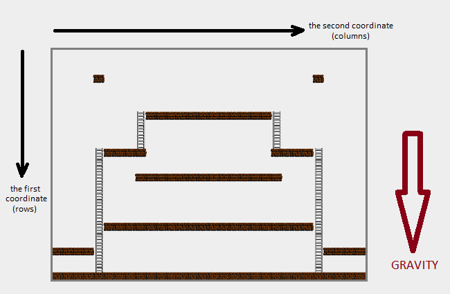
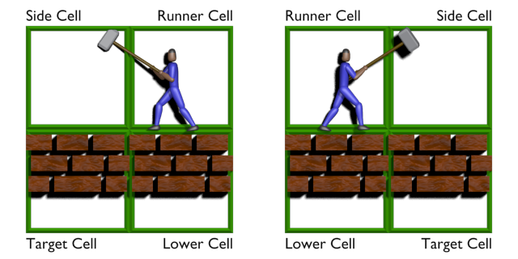
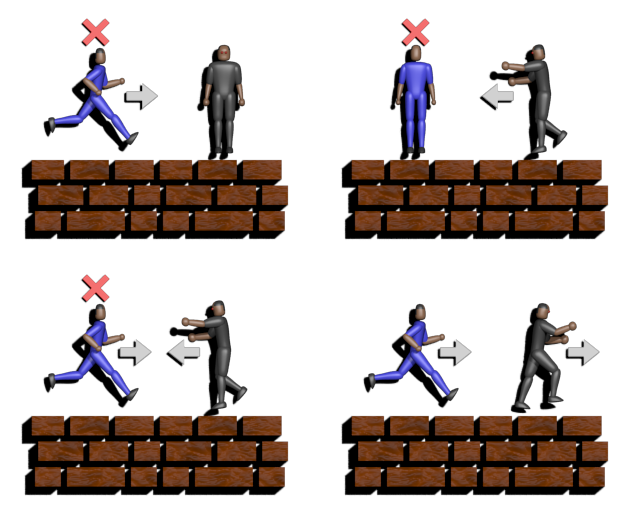
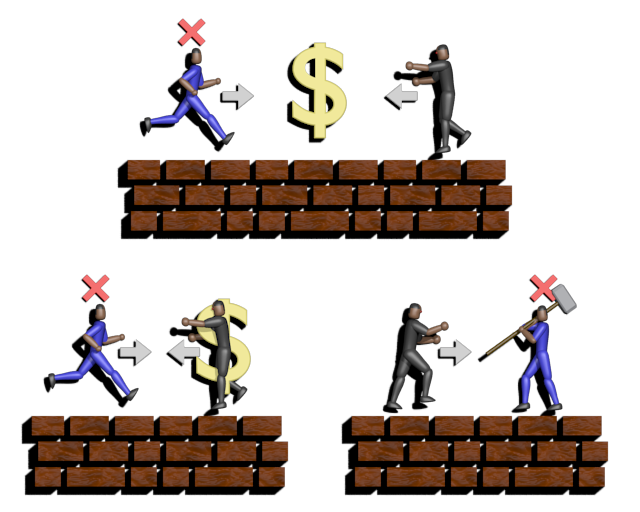

The game, CodeRunner, is a two-player game. Two players, one red and one blue, each control a runner, which can move in the two-dimensional cellular world and collect gold. Enemies also inhabit the world, moving around and killing the runners if they catch them. The runners earn points for collecting gold, killing enemies and their opponent runner, and for visiting individual cells of the world for the first time.
A match of CodeRunner proceeds through a series of turns. Games can vary in duration, from as few as 400 to as many as 1200 turns. At the start of each turn, both players are given a description of the current state of the game. For each turn, both players choose a move for their runners. Then, based on the players’ moves, the game updates its state, and then the next turn begins.
The enemies move around the world just like the players' runners. However, the enemies move more slowly than the runners and their movement is controlled by the game rather than the players.
The game map is a fixed-size, two-dimensional 16-by-25 matrix of cells. Although the game map is always the same size, its contents can vary from game to game. A cell of the map may contain any of the following:
Coordinates on the map are defined by row and then column. The top row of the map is row 0 at the bottom is row 15. The leftmost column is column 0 and the rightmost is column 24.

The map is occupied by moving characters, two runners and a number of enemies. These characters generally move by walking above cells containing Brick or climbing up and down through cells containing Ladder.
A runner can temporarily destroy the Brick in a cell. When this occurs, the Brick in that cell is replaced by Removed_Brick for 25 turns, after which it is restored to Brick. If a runner or an enemy is occupying the Removed_Brick cell when it is restored to Brick, the runner or enemy is killed.
Runners and enemies are affected by gravity. They will fall down, one cell each turn if they are not either on a ladder or standing on something. A runner or enemy is considered to be on a ladder if it's in a cell that contains Ladder. A runner or enemy is considered to be standing on something if it's above a cell containing either Brick or Ladder or Removed_Brick with an enemy trapped in it. Runners and enemies are also considered to be standing on something if they are on the bottom-most row.
Runners will fall through a Removed_Brick cell, but falling enemies will not. Instead, if one or more enemies enter a Removed_Brick cell, either by falling or any other move, they will become trapped there until the Brick is restored. While one or more enemies are trapped in a Removed_Brick cell, runners and other enemies can walk across the top of the cell without falling. They just hop across, stepping on the trapped enemy's head.
Falling runners and enemies can't perform any actions. They can't move and runners can't destroy bricks until they land on a surface.
If a runner moves into a Gold cell during a turn, the runner collects the gold. The gold is replaced by an Empty for 150 turns, after which it is restored to Gold and available for collection again.
Each runner starts the game at a location called the runner's respawn cell. If a runner is killed during the game, this is where it will eventually reappear to resume playing.
In general, a runner can make 7 different moves. It may use the None command to do nothing. It may move one cell in any of four directions using the Left, Right, Top and Bottom commands. Also, a runner may destroy the bricks below and to the left or below and to the right using the Dig_Left and Dig_Right commands. For moving among cells, runner movements are subject to the following rules:

Instead of moving, a runner may use the Dig_Left and Dig_Right commands to temporarily destroy the Brick in the cell below and to the left, or the cell below and to the right of the runner's location. The ability to perform this action depends on the state of the runner and contents of the neighboring cells. Successfully destroying a brick requires the following:
If all these conditions are met, the runner is able to destroy a brick, temporarily replacing the Brick with Removed_Brick.

A runner can be killed by one of the enemies. A runner is killed if it occupies the same cell as an enemy at the end of a turn, or if the runner and an enemy exchange positions during a turn. Otherwise, the runner will not be killed if it moves into a cell, and an enemy moves out of that cell in the same turn. The red and blue runners have no effect on each other, and can pass through each other without either one being killed. A runner is also be killed if it is in a Removed_Brick when it is restored to a Brick.
After dying, a runner respawns in its respawn cell 50 turns after a being killed. Of course, a runner that is killed can't make any moves until it is respawned 50 later.
Like the runners, each enemy starts the game at a location called its respawn cell. If an enemy is killed during the game, it will eventually reappear at its respawn cell.
In general, an enemy can perform 5 different actions, they can do everything a runner can do except destroy bricks. Enemy movement is subject to the same constraints as runner movement, except that they become trapped in a Removed_Brick cell after entering it.
Enemies fall at the same speed as the runners, but, otherwise, they move half as fast. Each enemy gets to move once every two turns. If an enemy moves at turn t, it won't be able to move again until turn t+2. If, however, the enemy moves above a Removed_Brick cell during turn t, it will fall into it during turn t+1. The first move is made at the first turn (turn number 0).
Enemies are killed only when they become trapped in a Removed_Brick cell and the Brick is restored. When this occurs, the enemy is temporarily removed from the map and unable to move. The enemy respawns on his respawn cell 25 turns after being killed. If the enemy is killed at turn t, then it will be able to move at turn t+25.
Enemies have two basic modes of operation as they move around the map. If no runner is nearby, they operate in patrol mode, repeatedly following a fixed circuit in the map. When a runner is nearby, they operated in pursuit mode, chasing the nearest runner.
When in patrol mode, the enemy follows a circuit defined by a fixed list of movement instructions, the enemy's program. Each instruction is a move command, Left, Right, Top or Bottom. Each enemy's program is guaranteed to create a circuit, taking the enemy back to its respawn cell after the last instruction. The enemy executes its program repeatedly: after performing the last instruction, the enemy switches to the first one. If an enemy dies, it starts performing its program from the first instruction after it respawns. The list of instructions is consistent: unless the enemy becomes trapped in a hole, it will always be able to perform its current instruction.
Falling may be part of an enemy's program. Falling is simply represented as a sequence of Bottom commands in the program, with the number of Bottom commands equal to the number of turns the enemy falls.
When an enemy chooses its move, it first checks to see if there is a runner a short distance away. If there is, the enemy will pursue the runner rather than follow its circuit. Enemies measure the distance to some destination, d, as the length of the shortest reversible path to location d. A reversible path to d is just a sequence of moves that will get the enemy to location d without using any falling.
Enemies use a Breadth-First Search (BFS) based on the game rules to find the shortest reversible path to a destination. This search does not permit the enemy to use falling, and it ignores cell values of Removed_Brick, treating them as Brick instead. Effectively, the enemy's plan for reaching a destination assumes bricks will be restored by the time the enemy needs to walk across them. If several equally short paths exist to a destination, the enemy will choose one deterministically, using a rule that depends on the enemy's respawn cell. Enemies that start on the left side of the map will prefer to use Top first. If they can't use Top first, they will prefer Right, then Bottom, and then Left. So, given a choice between the plans Left, Bottom, Bottom, Right and Right, Bottom, Bottom, Left, an enemy that started on the left side of the map will prefer Right, Bottom, Bottom, Left. An enemy with a respawn cell on the right prefers Top, then Left, then Bottom, then Right. Faced with the same choice, an enemy from the right side of the map would choose Left, Bottom, Bottom, Right.
Every enemy maintains a chase radius for each of the two runners. If the distance to a runner's location is less than or equal to that runner's chase radius, then the enemy will switch to pursuit mode and take the move along the shortest reversible path to the runner's location. Initially, every enemy has a chase radius of 5 for both runners. The chase radius changes when an enemy is killed by a runner. The runner that most recently killed a particular enemy is called that enemy's master, and the enemy will prefer to chase the other runner. The chase radius for the master is only 4, while the chase radius for the other runner is 8. If an enemy is killed by a brick that was removed by both players simultaneously, then the enemy has no master and its chase radius is set to 5 for both runners.
While a runner is inside its chase radius, enemies in pursuit mode push every move they make onto a stack. The enemy uses this stack to find its way back to its circuit when it no longer has a runner to pursue; it's the reason the enemy will not use falling to pursue a runner. If an enemy is in pursuit mode and both of the runners move to be outside the chase radius, the enemy will begin popping moves off its stack and making the opposite move. For example, if a Left is on top of the stack, the enemy will pop it and move Right. Once the stack is empty, the enemy returns to patrol mode if no runner is within its chase radius. At this point, the enemy will resume running its program right were it left off when it entered pursuit mode.
If both runners are within the chase radius for an enemy, the enemy will chase the one that's closer. If there is a tie, the enemy will compare the first moves of the shortest paths to each runner. If these moves are different, it will chose one based on its move preference order, Top, Right, Bottom, Left for enemies starting on the left and Top, Left, Bottom, Right for enemies starting on the right. If the first moves of these paths are the same, then the enemy will just make this move.
Runners score points for various events that occur during the game. At the end, the player with the highest score is the winner. Runners score points for the following:
Many things can occur during a turn. Runners and enemies can move, fall and respawn, runners can destroy bricks and collect gold, runners and enemies can be killed, and bricks, gold runners and enemies can respawn. During a turn, the game processes these events in the following order:

Under some circumstances, this ordering of events has consequences for how points are scored and whether a particular action is successful. For example: